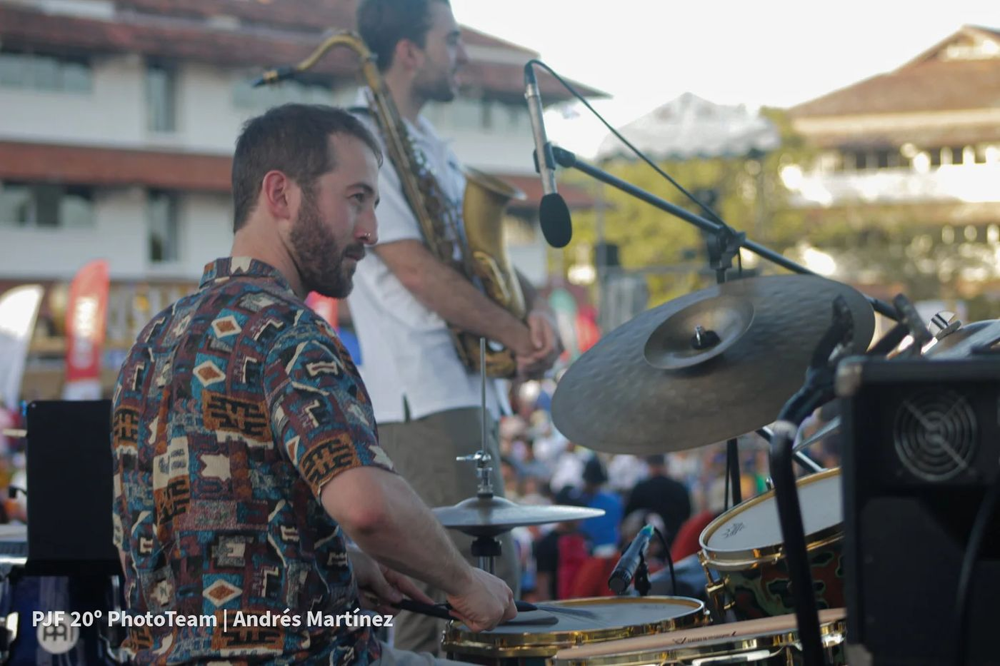
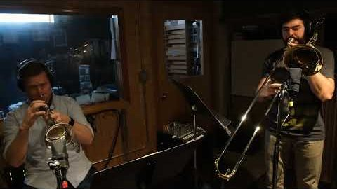
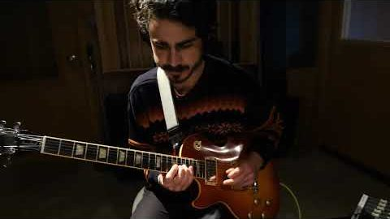
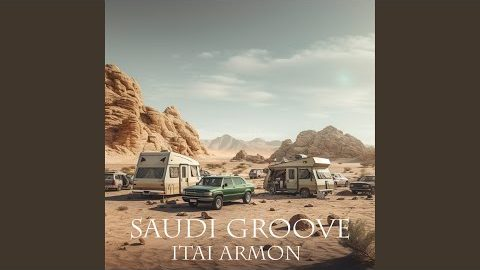
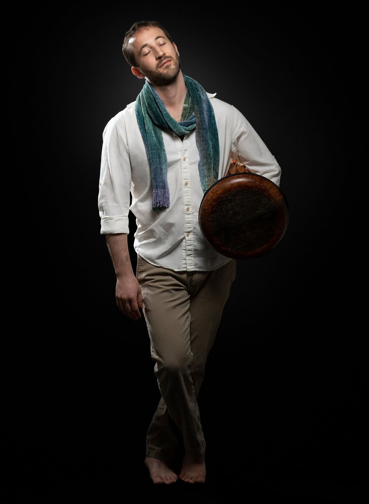
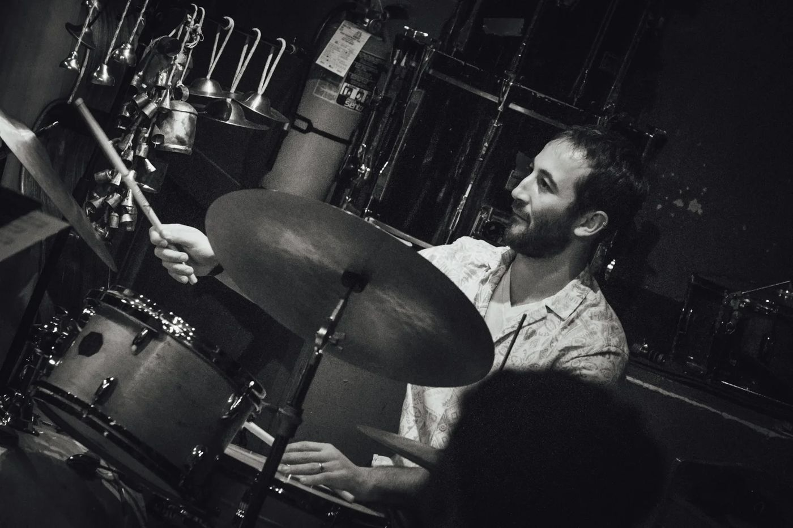
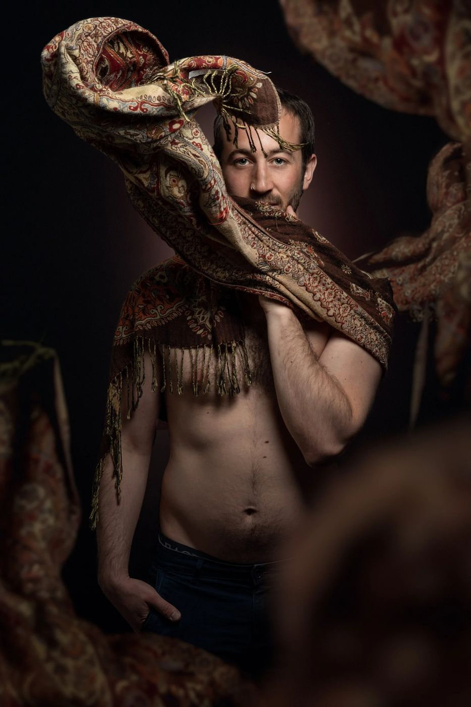
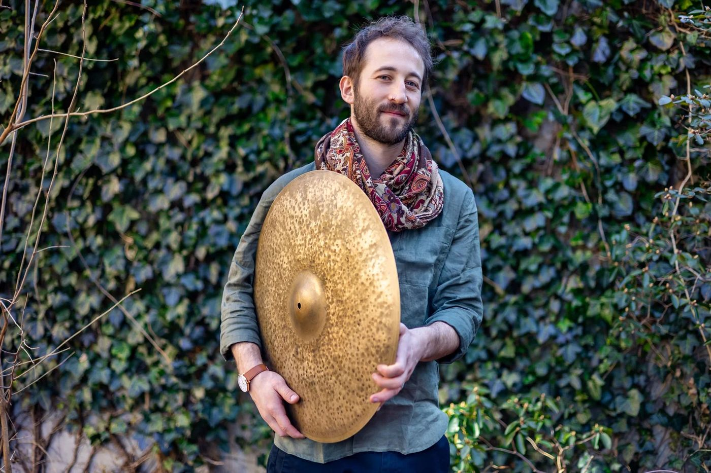
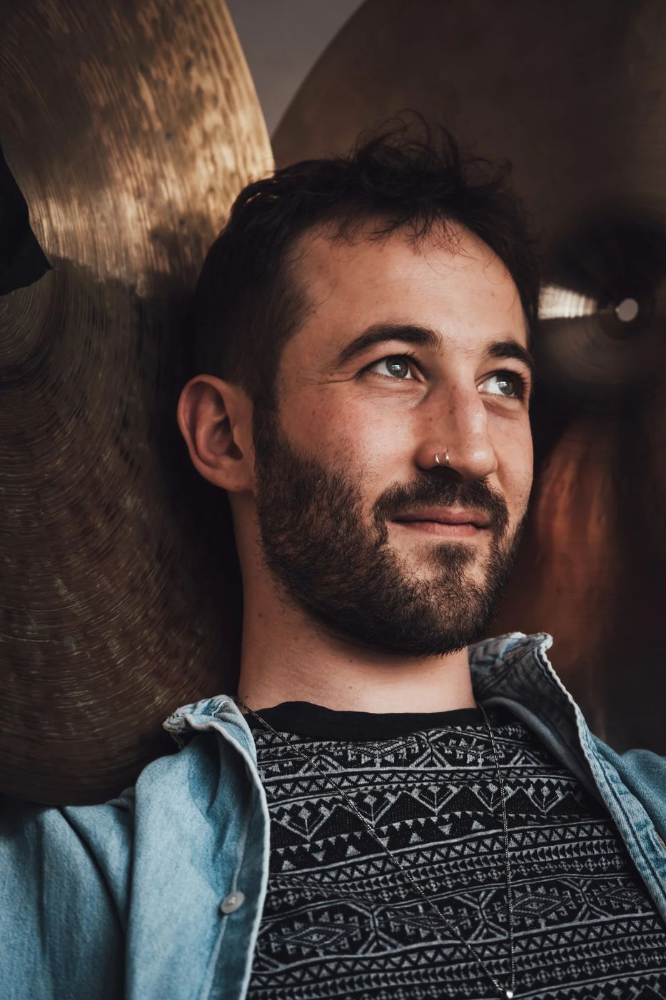

videos · music · photos
Watch & Listen
Music videos, live recordings and studio sessions, the albums, and photos for press. Hi-res files are in the press kit.

watch
Videos
 De Amorofficial music video · songs for empathy
De Amorofficial music video · songs for empathy

Casi Librefrom the studio · songs for empathy
Between Stormsfrom the studio · songs for empathy Lowlive at virtuosity
Lowlive at virtuosity
 Madhavski Horobombaras · live at feelbeit
Madhavski Horobombaras · live at feelbeit

Saudi Grooveitai armon ensemble Shaloshzohar fresco · drum set arrangement by nadav
Shaloshzohar fresco · drum set arrangement by nadav
 Song for Tzlilsoltz trio
Song for Tzlilsoltz trio
 Dawini Badawakhamadrasa · traditional algerian
Dawini Badawakhamadrasa · traditional algerian
listen
Albums
A Sign of Life
photos
Photographers: Francesco Gargiulli, Yuval Gur, Taylor Rossi, Andrés Martínez, Susana Jiménez
Gallery








